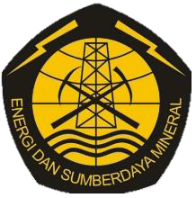

Integrated certification
ISO Certified
Integrated ISO systems and Indonesian local SMK3 reference supporting safer, cleaner, and more controlled project delivery.
Geotechnical
Taka Hydrocore delivers drilling, CPT, sampling, coring, and soil investigation services configured around site condition, access, and project objectives.
Marine geophysical acquisition and interpretation
Geotechnical drilling and soil investigation
Company profile
Trusted by
Established in 2010, PT Taka Hydrocore Indonesia provides exploratory, geophysical, geotechnical, hydrogeological, environmental, and water-well drilling work for mining, oil and gas, infrastructure, contractor, and consulting clients.
View company profile →


Integrated ISO systems and Indonesian local SMK3 reference supporting safer, cleaner, and more controlled project delivery.

★★★Registered oil and gas supporting capability with company rating for field service readiness.

Pertamina zero accident recognition reflecting disciplined HSE execution during project operations.
THI configures each scope around project objective, water depth, soil target, acquisition method, drilling platform, and reporting needs.

01
Marine Geophysical
High-resolution seismic acquisition, processing, and interpretation for geohazard, exploration, and subsea planning.
02
Offshore Geotechnical
Offshore drilling, CPT, sampling, coring, and downhole logging using suitable marine platforms and compensated systems.
03
Seabed Geotechnical
Seabed CPT and vibrocore systems for direct seabed investigation and shallow subsurface sampling.
04
Nearshore Geotechnical
Shallow-water investigation using staging, pontoon, or platform-based drilling for coastal and marine infrastructure.
05
Exploratory Drilling
Mining and resource drilling with quality coring, field geologist support, and fit-for-purpose drilling diameter.
06
Onshore Geotechnical
SPT, CPT, pressuremeter, field vane shear, sampling, and laboratory-backed soil investigation for land projects.
Health, Safety and Environment
QHSE at THI is handled as field discipline: people are briefed, equipment is checked, critical gear is verified, and every scope is documented before execution.


.jpeg)
Crews are briefed, fit to work, and aligned on the work method before activity begins.
Critical equipment is inspected, maintained, and load tested before mobilization.
Hazards, access, lifting, marine activity, and emergency response are reviewed with the site team.
Records, certificates, toolbox talks, and reporting are kept visible throughout the job.
Define the scope, method, crew, equipment, and HSE requirements before mobilization.
Align field personnel through toolbox talks, risk review, and role clarity.
Check equipment, permits, lifting gear, emergency setup, and worksite readiness.
Keep reports, observations, and close-out notes ready for project review.
Selected work
Selected references are organized around the technical work delivered: geophysical acquisition, offshore geotechnical investigation, cable route survey, and seabed sampling.
Offshore Geotechnical / Angola
Client · RINA Consulting SpAProvision of marine geotechnical site survey for jackup drilling unit installation in Block 3/05, Angola.
Submarine Cable Route Survey
Client · Keppel Energy Pte LtdGeophysical & Vibrocore Survey
Client · Karimun Besar ProjectOperational strength comes from survey planning, fit-for-purpose equipment, disciplined field execution, and reporting that supports engineering decisions.
News from Decap CMS will appear here after content is published.
Start a project conversation
Share your project location, survey objective, water depth or site condition, expected deliverables, and timeline. The team can help align the right method before mobilization.
Komplek Pilar Mas, Building No. 12 - 14
Jl. K.H. Ahmad Dahlan No.77, Cireundeu
Ciputat Timur, South Tangerang City, Banten 15419
Jl. Raya Gede Bage No. 247
Bandung 40295, Indonesia